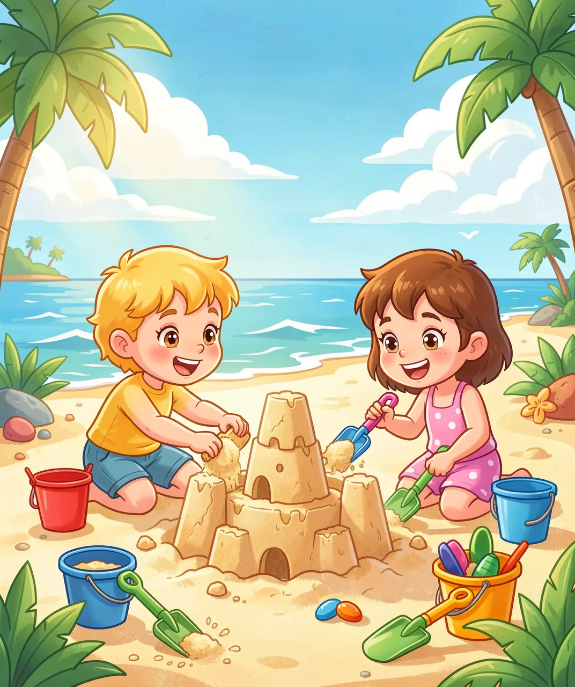
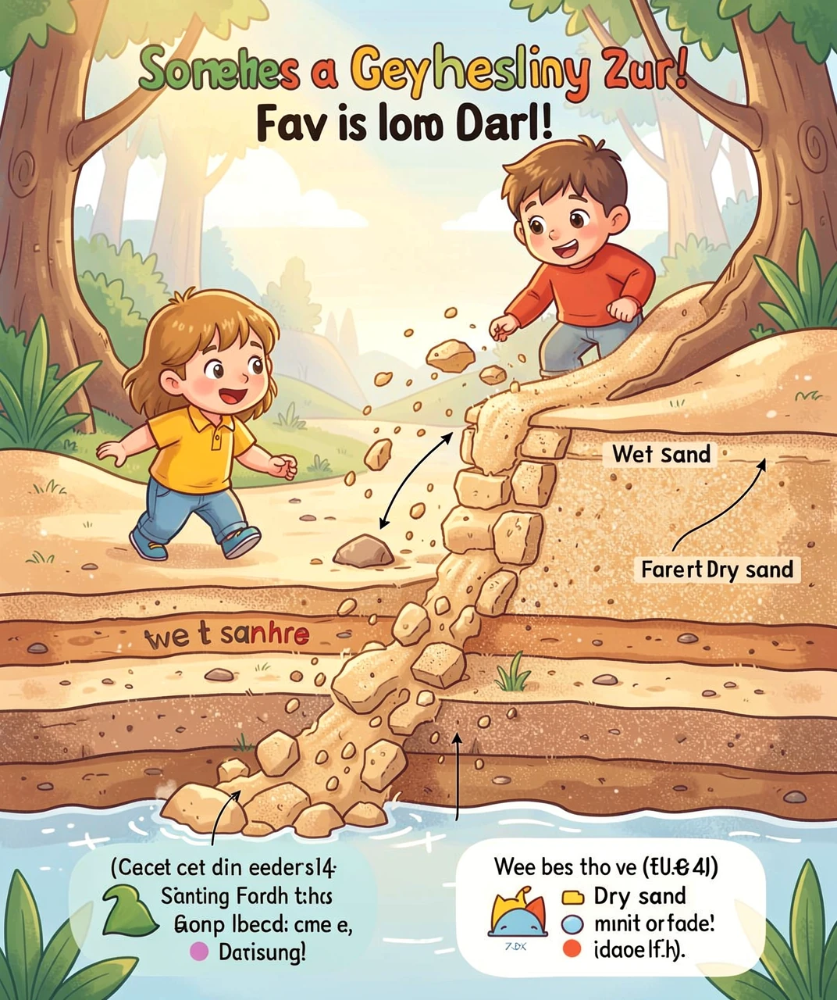
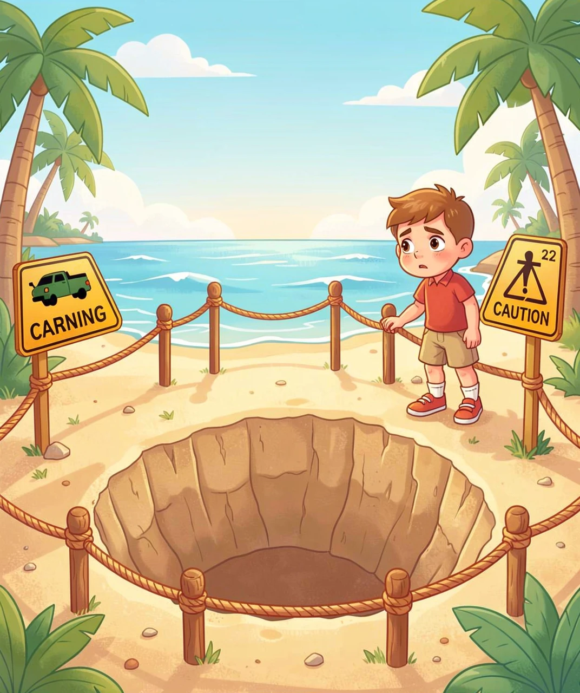
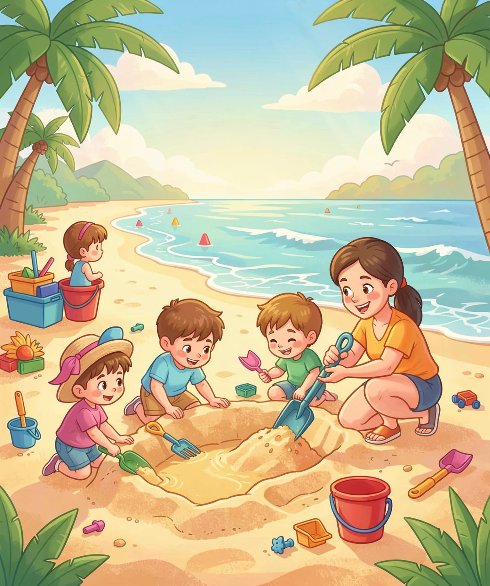
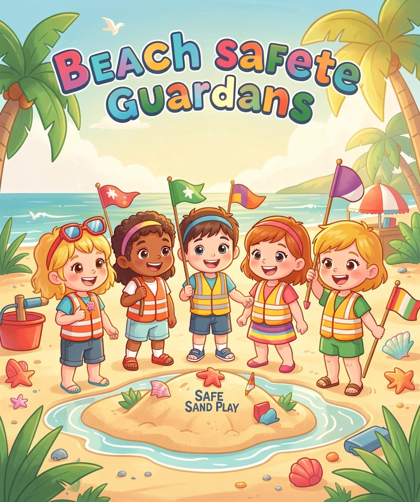

挖沙坑的安全风险与防护

夏天的海滩，是孩子们的天堂！堆沙堡、挖沙坑、踩浪花……每一个来到沙滩的小朋友，都忍不住拿起小铲子，在沙滩上挖呀挖呀挖。
你知道吗？挖沙坑看起来简单又安全——沙子那么松软，踩上去都不会疼，能有什么危险呢？
可是，正是这个看似无害的游戏，隐藏着很多人不知道的安全风险。每年夏天，全世界都有小朋友因为在沙滩上挖沙坑而受伤，甚至发生更严重的意外。
今天，我们就来揭开"挖沙坑"的秘密——它为什么危险？怎么玩才安全？读完这篇文章，你就是沙滩上的安全小卫士！

要理解沙坑的危险，我们先来做一个小实验：抓一把干沙子，用力握紧——然后松开手。沙子立刻就散开了，对不对？
这就是沙子的特性：松散、不稳定。沙子不像泥土那样有粘性，一粒一粒的沙子之间没有"胶水"把它们粘在一起。
当你挖沙坑的时候，沙坑的"墙壁"是由一粒粒沙子堆起来的。只要有一点点震动——比如有人从旁边跑过、或者海浪拍过来，沙坑的墙壁就会瞬间"哗啦"一下倒塌！
更可怕的是：湿沙比干沙更危险！你可能觉得湿沙更结实、更好塑形——确实，湿沙能做成漂亮的沙堡。但这恰恰是陷阱所在：湿沙干燥后会变得极其松软，之前看着很牢固的沙坑墙壁，几分钟后可能就完全不牢靠了。

沙坑的危险主要有四种，每一种都不能忽视：
第一，坍塌掩埋 🏚️——这是最危险的！沙坑的墙壁突然崩塌，把人埋在沙子下面。沙子会紧紧压住胸口，让人无法呼吸。而且越挣扎，陷得越深！
第二，沙坑陷阱 🕳️——在沙滩上走路的其他人，可能没注意到沙坑的存在，一脚踩空，扭伤脚踝甚至摔断骨头。这就像在沙滩上设置了一个"隐形陷阱"。
第三，潮水倒灌 🌊——很多小朋友喜欢在靠近海水的湿沙上挖坑。可涨潮的时候，海水会迅速灌满沙坑。如果人在坑里，可能被突然涌来的海水卷走！
第四，高温中暑 ☀️——沙滩上没有遮挡，太阳直射下，沙子的温度可以高达 60°C 以上！长时间蹲在沙坑里挖沙，非常容易中暑和脱水。

不是说不能挖沙坑——挖沙本来就是沙滩上最好玩的游戏之一！关键是怎么安全地玩。记住下面这六条安全守则：
守则一：深度不过膝 📏
沙坑最深不能超过你自己的膝盖高度。如果带着弟弟妹妹，就以他们的小腿高度为准。浅坑一样好玩，而且绝对安全！
守则二：要大人陪在身边 👨👩👧
挖沙坑的时候，必须有大人在旁边看着。如果大人暂时走开，你就先停下，等大人回来再继续。
守则三：远离海水 🌊
不要在高潮线以下的湿沙上挖深坑。潮水涨起来的速度比你想象得快得多——有时候每分钟能涨几十厘米！
守则四：不挖隧道 🚫
绝对不要在沙子下面挖隧道或者掏洞！沙子的顶部一旦失去支撑，会瞬间塌下来。
守则五：玩完要填平 🔙
离开海滩之前，一定要用铲子把你挖的坑填平、踩实。这样后面来的人就不会踩到陷阱受伤。
守则六：多喝水、注意防晒 💧🧴
在沙滩上每隔 20-30 分钟就要喝一次水，戴好遮阳帽，涂好防晒霜。千万不要因为玩得太开心忘了保护自己！

你学会了这么多关于挖沙坑安全的知识，现在你就是——沙滩安全小卫士！
下一次去海边的时候，你不仅自己会安全地挖沙、开心地玩耍，还能提醒身边的小伙伴和家长注意这些安全事项。
如果看到一个没人填平的深沙坑，你可以告诉大人，让他们帮忙填上——这个小小的举动，可能就保护了一个小朋友的安全。
记住：快乐的前提是安全。沙滩的魅力不会因为挖得浅一点就减少，堆一个精致的沙堡、做一条长长的小沙渠，一样能带来无限的创造力与快乐！
夏天、海浪、沙滩、阳光——还有你这个聪明又负责的安全小卫士。祝你下一次的海滩之旅，既开心又安全！🏖️✨